Жидкокристалические индикаторы
Жидкокристаллические индикаторы (ЖКИ) управляют отражением и пропусканием света для создания изображений цифр, букв, символов и т.д. В отличии от светодиодов, жидкокристаллические индикаторы не излучают свет.
Основу ЖКИ составляют жидкие кристаллы (ЖК), молекулы которых упорядоченны послойно определенным образом между двумя стеклянными пластинами. В каждом слое сигарообразные молекулы ЖК выстраиваются в одном направлении, их оси становятся параллельны (рис.1).
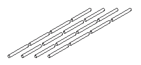
Стеклянные пластины имеют специальное покрытие, такое что направленность молекул в двух крайних слоях перпендикулярна. Ориентация каждого слоя ЖК плавно изменяется от верхнего к нижнему слою, формируя спираль (рис. 2). Эта спираль "скручивает" поляризацию света по мере его прохождения через дисплей.
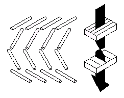
Под действием электрического поля молекулы ЖК переориентируются параллельно полю. Этот процесс называется твист-нематическим полевым эффектом (twisted nematic field effect, TNFE). При такой ориентации поляризация света не скручивается при прохождении через слой ЖК (рис. 3). Если передний поляризатор ориентирован перпендикулярно заднему, свет пройдет через включенный дисплей, но заблокируется задним поляризатором. В этом случае ЖКИ действует как заслонка свету.
Отображение различных символов достигается избирательным травлением проводящей поверхности, предварительно созданной на стекле. Не вытравленные области становятся символами, а вытравленные - фоном дисплея.
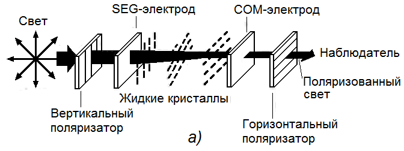
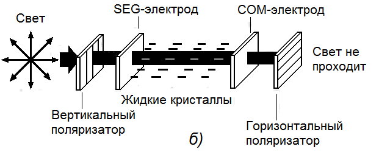
Символы создаются из одного или нескольких сегментов. Каждый сегмент может быть адресован (запитан) идивидуально, чтобы создать отдельное электрическое поле. Таким образом прохождение света управляется электрически, включая и отключая необходимые сегменты. В неактивной части дисплея направленность молекул остается спиральной, формируя фон. Запитанные сегменты составляют символы, контрастирующие с фоном.
В зависимости
от ориентации поляризатора, ЖКИ может отображать
позитивное или негативное изображение. В дисплее с
позитивным изображением передний и задний
поляризатор перпендикулярны друг другу, так что
незапитанные сегменты и фон пропускают свет с
измененной поляризацией, а запитанные препятствуют
прохождению света. В результате - темные символы
на светлом фоне.
В дисплее с негативным
изображением поляризаторы параллельны, "в фазе",
препятствуют прохождению света с повернутой
поляризацией, так что незапитанные символы и фон
темные, а запитанные - светлые.
Рефлективный
ЖКИ (reflective LCD) имеет отражатель (рефлектор)
за задним поляризатором, который отражает свет,
прошедший через незапитанные сегменты и фон. В
негативных рефлективных дисплеях свет отражается
через запитанные, "включенные" сегменты.
Трансмиссивные дисплеи (transmissive LCD)
используют те же принципы , но фон или сегменты
становятся ярче за счет использования задней
подсветки.
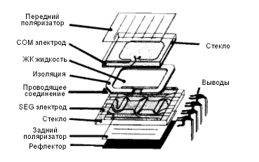
Режимы отображения ЖКИ
Режимы от ображения ЖКИ определяют то, как индикатор управляет светом для создания изображения. Чтобы выбрать оптимальный режим для конкретного приложения необходимо рассмотреть типичные условия освещения индикатора (см. таблицу 1).
Таблица 1
| Режим отображения | Изображение | Применение | Прямой солнечный свет | Офисное освещение | Приглушенный свет | Очень слабый свет |
|---|---|---|---|---|---|---|
| Рефлективный позитивный | Темные сегменты на светлом фоне | Без подсветки. Обеспечивает лучший фронтальный контраст и стабильность. | Великолепно | Очень хорошо |
Плохо | Очень плохо |
| Трансфлективный позитивный | Темные сегменты на сером фоне | Может освещаться отраженным внешним светом или подсветкой | Великолепно (без подсветки) |
Хорошо (без подсветки) |
Хорошо (подсветка) |
Очень хорошо (подсветка) |
| Трансфлективный негативный | Светло-серые сегменты на темном фоне | Требуется яркое освещение или подсветка. Часто используется с цветным трансфлектором (полупрозрачный отражатель) | Хорошо (без подсветки) |
Хорошо (без подсветки) |
Хорошо (подсветка) | Очень хорошо (подсветка) |
| Трансмиссивный позитивный | Темные сегменты на подсвеченном фоне | Разработан для плохих условий освещения, возможно использование при внешнем освещении | Хорошо (без подсветки) |
Хорошо (подсветка) | Очень хорошо (подсветка) | Великолепно (подсветка) |
| Трансмиссивный негативный | Подсвеченные сегменты на темном фоне | Не может быть использован без подсветки | Плохо (подсветка) | Хорошо (подсветка) | Очень хорошо (подсветка) | Великолепно (подсветка) |
Рефлективные (работающие на отражение) индикаторы
Обычно рефлективные ЖКИ используют режим отображения с темными символами на светлом фоне (так называемое позитивное изображение).
В индикаторе с позитивным изображением передний и задний поляризаторы находятся в противофазе, или перекрестно поляризованы на 90°.
Если сегмент "выключен", внешний свет идет по слелующему пути: проходит через вертикальный поляризатор, через прозрачный электрод сегмента, через ЖК молекулы которые скручивают его на 90°, через прозрачный общий электрод, через горизонтальный поляризатор, и попадает на рефлектор, который посылает свет обратно по тому же пути (рис. 5а).
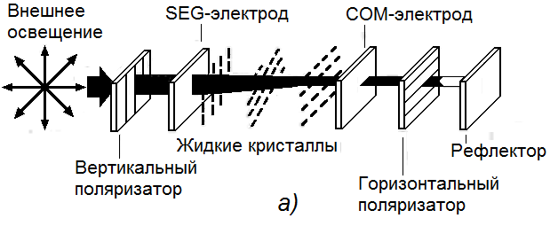
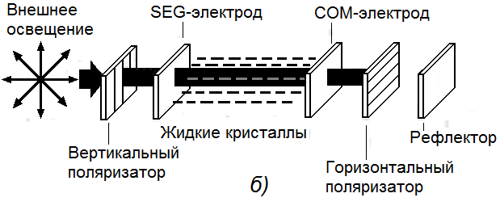
а) - в выключенном состоянии
б) - во включенном состоянии
Если сегмент "включен", внешний свет не изменяет своей поляризации при проходе через слой жидких кристаллов. Таким образом поляризация света противоположна заднему поляризатору, что не дает свету пройти к отражателю. Так как свет не отражается, получается темный сегмент (рис. 5б).
Рефлективные индикаторы очень яркие, с отличным контрастом и имеют широкий угол обзора. Они требуют хорошего внешнего освещения и не исползуют искуственной задней подсветки (хотя в некоторых моделях применяют подсветку сверху). Благодаря малым токам потребления рефлективные индикаторы часто используются в устройствах с питанием от батареек.
Трансмиссивные (работающие на пропускание) индикаторы
Трансмиссивные ЖКИ не отражают свет. Напротив, они создают изображение, управляя светом искуственного источника освещения, расположенного позади индикатора.
В трансмиссивных индикаторах передний и задний поляризаторы находятся "в фазе" друг с другом (параллельны). В выключенным сегменте поляризованый свет подсветки скручивается на 90° молекулами ЖК и оказывается в противофазе с передним поляризатором. Поляризатор блокирует свет, создавая темный сегмент.
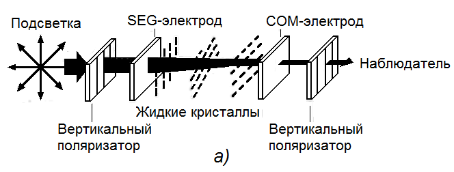
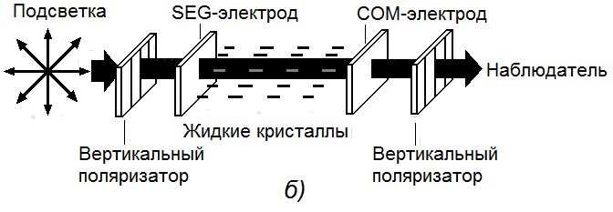
а) - в выключенном состоянии,
б) - во включенном состоянии
Если сегмент включен, свет не скручивается, оказываясь в фазе с передним поляризатором, и проходит через него, создавая световой рисунок. Таким образом трансмиссивный дисплей создает светлое изображение на темном фоне (негативное изображение).
Трансмиссивные индикаторы должны иметь заднюю подсветку, чтобы гарантировать равномерное свечение сегментов. Они хороши для использования в условиях приглушенного или слабого освещения. В условиях прямого солнечного света подсветка не может преодолеть солнечных лучей и изображение не заметно.
Трансрефлективные (работающие на пропускание и отражение) индикаторы
Трансрефлективные индикаторы используют белый или серебрянный полупрозрачный материал, который отражает часть внешнего света, а также пропускает свет задней подсветки. Поскольку эти индикаторы как отражают, так и пропускают свет, они могут использоваться в широком диапазоне яркостей освещения. Примером могут служить индикаторы мобильных телефонов - они читаемы как при ярком свете, так и в полной темноте. Трансрефлективные дисплеи имеют более низкую контрастность по сравнению с рефлективными, так как часть света проходит сквозь отражатель.
Таблица 2
| Свойство | Светодиодный | Лампами накаливания | Электролюминесцентный |
|---|---|---|---|
| Яркость | Средняя | Высокая | Малая - Средняя |
| Цвет | Красный - Янтарный - Зеленый | Белый | Белый |
| Размер | Малый | Малый - Средний | Тонкий |
| Крепление | SMD - Радиальный | Радиальный - Осевой | Осевой |
| Напряжение | 5 В | 1,5 - 28 В | 45 - 100 В |
| Ток при 5 В (на кв. дюйм) | 10 - 30 мА | 20 мА | 1 - 10 мА |
| Температура | Теплый | Горячий | Холодный |
| Стоимость (на кв. дюйм) | 0,10 - 1,00 долл. | 0,10 - 0,80 долл. | 0,50 - 2,00 долл. |
| Распространение света | Направленное | Сферическое | Ламбертское |
| Ударопрочность | Отличная | Низкая | Отличная |
| Срок службы (часов) | 100 000 | 150 - 10 000 | 500 - 15 000 |
Температура использования и хранения
Все ЖК материалы имеют строго определенный верхний предел рабочей температуры. ЖКИ могут восстанавливаться после короткого воздействия изотропической температуры, хотя температуры свыше 110°C разрушают внутреннее покрытие индикатора.
Нижний предел температурного диапазона ЖКИ не так хорошо определен, как верхний. При низких температурах время срабатывания индикатора увеличивается, так как замедляется движение молекул и возрастает вязкозть ЖК вещества. При очень низких температурах ЖК вещество переходит в твердое, или кристаллическое состояние.
Эффект низких температур обычно обратим. К примеру, ЖКИ опущенный в жидкий азот возвращается в нормальное состояние после короткого периода нагрева.
Внешние воздействия
Существует множество модификаций ЖКИ, стойких к различного рода внешним воздействиям, так как этого требуют военные стандарты. К примеру существует "высокостабильное" покрытие для защиты от высокой температуры и влажности. Покрытие - "барьер" препятствует загрязнению проводящими веществами, могущими вызвать короткое замыкание в индикаторе. Тонкопленочные нагреватели могут использоваться в низкотемпературных приложениях. Правильный выбор соединителя также помогает преодолеть внешние воздействия.
Угол и направление обзора
Контрастность изображения на индикаторе зависит от относительного расположения дисплея и наблюдателя. Угол обзора зависит также от толщины слоя ЖК. Большинство ЖКИ изготавливаются по второму классу с толщиной от 6 до 8 микрон. Первый класс имеет толщину от 3 до 4 микрон. Наиболее широкий угол обзора (до 165°) достигается при 4-х микронной технологии. При этом также уменьшается время отклика (срабатывания) ЖКИ.
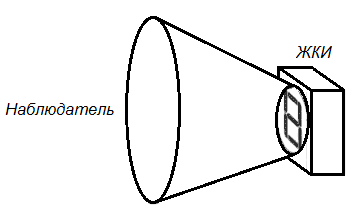
Контраст изображения
Контрастность главным образом определяется условиями внешнего освещения и правильностью выбора позитивного или негативного изображения. При повышении действующего среднеквадратического напряжения контрастность увеличиваетвя. Эффективность поляризатора и ЖК жидкости также способствуют лучшей контрастности.
Сегменты ЖКИ
Части ЖКИ, работающие как заслонки, включаясь и выключаясь для формирования изображений, называются сегментами.
Сегменты создаются прозрачными электродами из оксидов индия и олова, нанесенными на стекло ЖКИ. Цифры от 0 до 9 и некоторые буквы могут быть отображены на семисегментном индикаторе. Шестнадцатисегментный индикатор может отобразить цифры, все латинские и почти все русские буквы (кроме Й, Ц, Щ). Для того чтобы символы были менее угловатыми и более натуральными, используют матричные индикаторы. С их помощью можно также отображать небольшие изображения. Количество сегментов индикатора влияет на метод управления им.
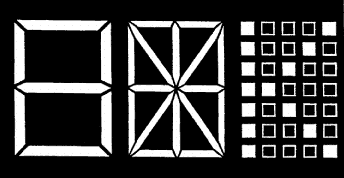
В добавление к алфавитно-цифовым символам, ЖКИ может отображать небольшие картинки, или иконки. К примеру дисплей на рис. 9 отображает функции копира. Эти изображения не изменяются - они могут только вкючатся или отключатся.
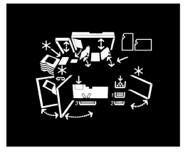
Время срабатывания
ЖКИ обычно имеет время срабатывания 50 мс при 20°C, а лучшие модели - до 10 мс. Стандартный ЖКИ может отображать сигнал до 10 Гц, если требуется; невооруженным глазом тяжело отследить данные с такой частотой.
Цветные изображения
Существует несколько методов создать цветное изображение в ЖКИ (таблица 3).
Таблица 3
| Технология получения цвета | Рефлективный | Трансмиссивный | Трансфлективный |
|---|---|---|---|
| Многоцветный передний поляризатор | + | - | + |
| Стандартный одноцветный передний поляризатор Красный, Синий, Серый, Зеленый |
+ | - | + |
| Цветная шелкография (большой выбор цветов) |
- | + | + |
| Задний фильтр произвольного цвета | - | + | + |
| Произвольный фильтр и шелкография | + | + | + |